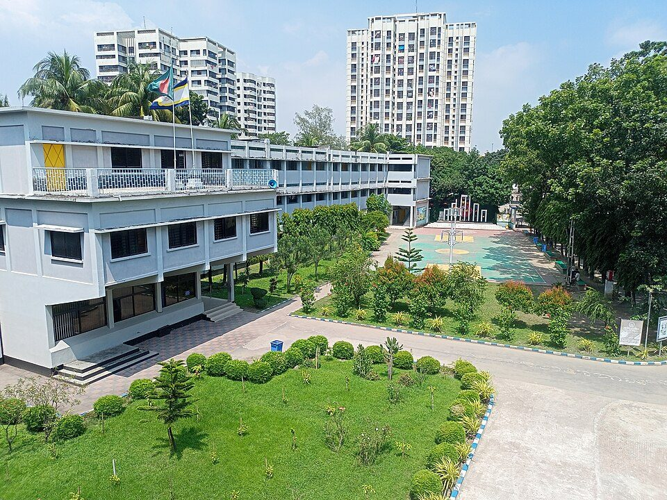

চল্লিশ বছরের পথচলা।
১৯৮৬ সালে একটা সহজ দুশ্চিন্তা থেকে শুরু — আগ্রাবাদের বাচ্চাদের জন্য বাড়ির কাছে ভালো একটা হাই স্কুল ছিল না। পাড়ার কয়েকজন মানুষ ঠিক করলেন, কাজটা নিজেরাই করবেন। ভবন অনেক বদলেছে, কিন্তু স্কুলটা কেন আছে — সেই কারণ বদলায়নি।
সত্তরজন ছাত্রছাত্রী, একটা টিনের ঘর আর অনেকের ভালোবাসা।
১৯৮৬ সালে আগ্রাবাদের ব্যবসায়ী মরহুম আলহাজ্ব আবদুল গফুর সওদাগর নিজের জমির একটা অংশ আর একটা টিনের ঘর দিয়ে দিলেন। ছয়জন তরুণ শিক্ষক প্রথম বছর প্রায় বিনা বেতনে পড়াতে রাজি হলেন, আর ৬ষ্ঠ থেকে ৮ম শ্রেণিতে ভর্তি হলো সত্তরজন।
অভিভাবকেরাও যে যেভাবে পারেন হাত লাগালেন — কেউ বেঞ্চ দিলেন, কেউ টিউবওয়েলের খরচ। পাঁচ বছরের মধ্যেই প্রথম এসএসসি ব্যাচ বের হলো, আর টিনের ঘরে আর জায়গা হচ্ছিল না।

স্কুলটা যেভাবে বড় হলো।
স্কুলের যাত্রা শুরু
টিনের ঘরে ৭০ জন শিক্ষার্থী আর ৬ জন শিক্ষক, ৬ষ্ঠ–৮ম শ্রেণি।
প্রথম এসএসসি ব্যাচ
চট্টগ্রাম বোর্ডের অধীনে ৩৮ জন এসএসসি দিল, পাস করল ৩৫ জন।
এমপিওভুক্তি
স্কুল এমপিওভুক্ত হলো — শিক্ষকেরা সরকারি বেতন-ভাতা পেতে শুরু করলেন।
নতুন ভবন
টিনের ঘরের জায়গায় উঠল তিনতলা ভবন, আলাদা বিজ্ঞানাগারসহ। ২০১৬ সালে যোগ হলো চতুর্থ তলা।
কম্পিউটার ল্যাব চালু
৩০টা কম্পিউটারের ল্যাব আর মাল্টিমিডিয়া ক্লাসরুম — খরচের বড় অংশ দিয়েছেন প্রাক্তন শিক্ষার্থীরা।
ডিজিটাল হাজিরা ও এসএমএস
কার্ডে হাজিরা চালু — কেউ না এলেই অভিভাবকের ফোনে এসএমএস যায়।
কিছু জিনিস ১৯৮৬ সালের মতোই আছে।
পাড়ার স্কুল
বেশিরভাগ শিক্ষার্থী এখনও হেঁটেই স্কুলে আসে। অনেকের বাবা-মাও এখানেই পড়েছেন।
টাকার জন্য কাউকে ফেরানো হয় না
প্রথম বছর থেকেই গরিব অথচ মেধাবী শিক্ষার্থীরা বিনা বেতনে বা অর্ধেক বেতনে পড়ে।
মানুষের হাতে গড়া
জমি দিয়েছিলেন এক প্রতিবেশী, ল্যাব দিয়েছেন প্রাক্তনরা। স্কুলটা আজও আগ্রাবাদের মানুষেরই।